Technical Design Document · Brief 5: Coaching institute fee tracking and parent portal
A fee ledger, parent portal and dues desk for Company A, Jaipur. Parents know what they owe without calling. Reminders send themselves and stop on payment. Accounts get one view of every centre.
npm install && npm run setup && npm run dev (see deployment.md)
Demo loginsParent 98290 00587 (code shown on screen) · Accounts neha@companya.test · Counsellor vikram@companya.test · password kosh-demo-2026
The brief's core slice, end to end, on realistic data: 184 students across 4 centres and 16 batches, with seven months of payments, reminders, attendance and test scores, including the three sample students exactly as given.
| Core build item | Where it is |
|---|---|
| Fee ledger | Staff: Students → any student. Plan, discount, instalments, FIFO allocation, balance, days overdue, receipts, messages sent, record a payment. |
| Parent portal with dues and pay link | OTP login. First screen is amount, due date and one pay button. Fee plan and GST receipts, attendance and test scores. Hindi and English. |
| Reminders that stop on payment | Daily job, 7 steps per instalment (7 and 3 days before, on the day, 3, 7, 15, 30 after). Paying cancels the rest at once, because each run reads the live ledger. |
| Refund calculator | Policy written as code (clauses R1 to R7), the same clauses rendered on the public policy page. Shows its working line by line, the 10-day deadline, a GST credit note. Maker-checker approval. |
| Dues dashboard | Overdue by centre × batch heatmap, ageing buckets, the brief's 60-day metric against its baseline and target, collections due in the next four weeks, Tally XML and CSV export. |
| Roles | Parent, accounts executive, and counsellor (the brief says counsellors mark false flags, so they get their own role with only the call list). |
| AI: dropout-risk flag | Explainable logistic score from missed instalments, attendance and test trends. High risk opens a counsellor call task only. "Unsure" is shown but opens nothing. Counsellors mark false flags, which suppress re-flagging and feed a live precision figure. |
Optional depth also built: bulk CSV upload of attendance and test scores per batch, payment matching with an unmatched queue, Tally export, DPDP consent capture, GST receipts, a test-mode payment gateway with signed webhooks, a ⌘K command palette, a WhatsApp preview of what the parent received, and a demo clock that moves the business date forward and runs the daily jobs, so a reviewer can watch reminders fire and stop.
Everything below is my assumption, not something the brief states. Each is labelled so it can be checked with the client.
| # | Assumption | Why |
|---|---|---|
| A1 | Demo "today" is 2 Nov 2026. | Only date where the sample rows agree: 10 Oct + 23 days overdue, and 15 Nov − 13 days. |
| A2 | 2027 batches run 6 Apr 2026 to 31 Mar 2027 (360 days). | Usual Kota/Jaipur session for a 2027 exam. |
| A3 | Gross fee ₹1,20,000. JEE: 4 × ₹30,000 on 10 Apr, 10 Jul, 10 Oct, 10 Jan. NEET: 3 × ₹40,000 on 15 Apr, 14 Aug, 15 Nov. | Matches the brief's average fee, "3 or 4 instalments" and the sample amounts and dates. |
| A4 | Fees are GST-inclusive at 18%, SAC 999293, intra-state so CGST 9% + SGST 9%. | Coaching is taxable at 18%; all centres are in Rajasthan. |
| A5 | Part payments clear the oldest instalment first (FIFO). | How fee desks usually work; keeps "days overdue" about the oldest debt. |
| A6 | Reminders go by WhatsApp (mocked), one per step, at the 08:30 IST daily run, in the parent's chosen language. | Parents use low-end phones and WhatsApp already (scores go out there today). |
| A7 | Refund policy text R1 to R7 (see section 5) is my reading of the 2024 guidelines: pro-rata by day for the unattended period, unreturned printed material deductible at list price, no other charges, paid within 10 days of the written request. | The brief requires a published, pro-rata policy but does not give the client's wording. |
| A8 | GSTIN, company legal name and Tally ledger names are placeholders. | Not in the brief. No real identifiers in the repo. |
| A9 | An OTP-verified login from the mobile number the centre holds for the parent counts as verifiable parental consent under DPDP, recorded with time and policy version. Retention 8 years after the course (tax records). | DPDP rules allow verification against reliable identity details already held. |
| A10 | Risk model coefficients are hand-set. | No history of who dropped out exists yet. Section 6 explains how it gets refit. |
| A11 | A bank credit is applied automatically only if its narration contains a valid student ID and the amount is within that student's balance. | A wrong match would mark someone else's child as paid. |
| A12 | Pay links open without a login (signed, unguessable, show only first name and amount). | One tap from WhatsApp on a basic phone; logging in first would cost payments. |
| A13 | Refunds need two accounts people (maker-checker). | Money leaving the business; common control. |
| A14 | Seed data is a 184-student sample, not 2,600. All names and numbers are fictional. | Enough to make every screen realistic; the code paths do not change with size. |
/api/gateway/webhook; reminders are written to an outbox table that a sender would drain.| Table | Holds | Notes |
|---|---|---|
| centres, batches | 4 centres, 16 batches (course, start, end) | Batch dates drive the refund period. |
| parents | Name, mobile, language, consent time and version | Unique mobile; language also sets reminder language. |
| students | ID (STU-0587), batch, parent, joined, status, withdrawn on | Several students can share a parent (siblings). |
| fee_plans | Gross fee, discount type/value/reason, net fee | Percent or flat discount, validated. |
| instalments | Student, sequence, due date, amount | Parts always sum to the net fee. |
| payments | Amount, date, method, reference, receipt number, gateway order, who recorded it | The only source of truth for money in. Unique receipt and gateway order. |
| gateway_orders | Order per pay attempt, fixed amount, status | Amount taken from the ledger on the server. |
| unmatched_payments | Credits the matcher would not place, reason, resolution | Nothing is marked paid on a guess. |
| reminders | Instalment, step, sent or superseded, language, body, balance at send | Unique (instalment, step): a step can never send twice. |
| attendance, test_scores | Monthly present/total; tests with score/max | Upserted by bulk upload. |
| risk_flags | Probability, factors (JSON), status open/called/false flag, note, reviewer | Only ever read by the call list. |
| refunds | Request and leave dates, deduction, amount, calculation snapshot, policy version, deadline, status, maker, checker, payout ref | Snapshot keeps old refunds explainable after a policy change. |
| staff, otp_codes, audit_log, settings | Logins, hashed OTPs, every money and consent action, receipt counters and demo clock | Audit rows commit inside the same transaction as the payment. |
Money is stored as whole rupees. GST is split in paise on receipts and exports so CGST + SGST + taxable always add back exactly to the amount received.
| Clause | Rule as implemented |
|---|---|
| R2 | Period starts at the later of course start and joining date; days used run to the last day attended, inclusive, capped at the course length. |
| R3 | Fee for days used = net fee (after discount) × days used ÷ total days, rounded to the rupee. |
| R4 | Unreturned printed material at list price, capped at ₹15,000 (above that needs a manual review). No admission, processing or cancellation charge. |
| R5 | Refund = paid − fee for days used − material. Never below zero; a shortfall is shown for the record but not demanded. |
| R6 | Deadline = written request date + 10 days. Shown as a countdown, red at 3 days. |
| R7 | GST credit note split for the refunded amount. |
Worked example from the seed: Aarav paid ₹90,000 of ₹1,20,000. Leaving after 218 of 360 days, fee for days used is ₹72,667, refund ₹17,333, due within 10 days. Saving the refund marks the student withdrawn (reminders stop at once); a second accounts person approves it, then it is marked paid with the bank reference.
The dropout-risk flag is a small logistic model, chosen over a black box because a counsellor has to be able to see why before calling a parent about their child.
| Signal | Feature | Weight |
|---|---|---|
| Missed instalments | Instalments unpaid more than 7 days | 0.85 each |
| Age of debt | Days the oldest is overdue, per 30, capped at 90 | 0.6 |
| Low attendance | Below 80% in the latest month | 4.0 × gap |
| Falling attendance | Earlier months vs last two, percentage points | 0.06 per pt |
| Falling scores | Least-squares slope over the last 3 or 4 tests | 0.09 per pt |
Probability = sigmoid(−2.9 + sum of contributions). Each contribution is stored with the flag and drawn as a bar on the call card.
risk_flags; it has no code path to fees, reminders or parent messages.Payment matching is the other automation. Its failure mode is handled the same way: when unsure it does nothing and asks a person (section 5).
The client asked for restrained, purposeful design and for parents to understand their dues in five seconds. The palette comes from Jaipur block print (Sanganer, Bagru): indigo on unbleached cotton, with madder red, ochre and leaf green. Each colour has one job: indigo = actmadder = overdueochre = part paid / watchleaf = paid. Amounts are set in Fraunces, a serif with tabular figures, so numbers read like a ledger; interface text is Instrument Sans with Mukta for Devanagari. No gradients, no stock icons, no decorative charts.
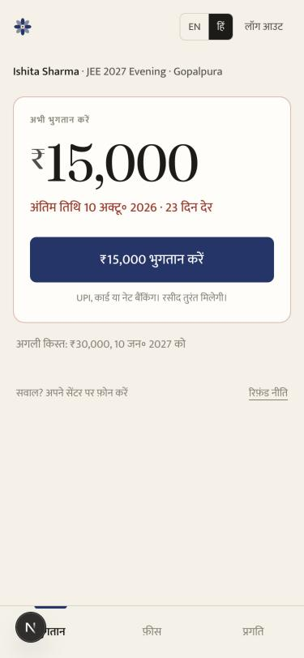
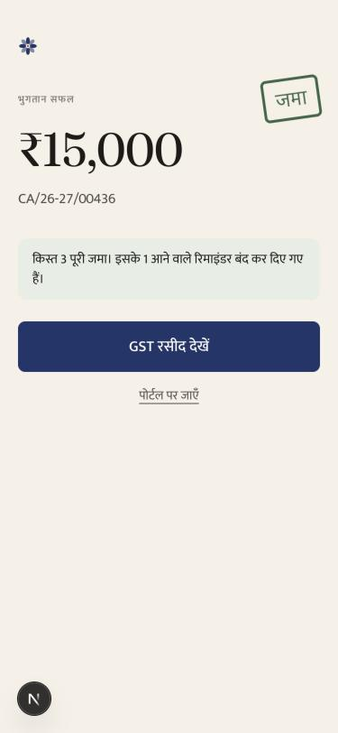
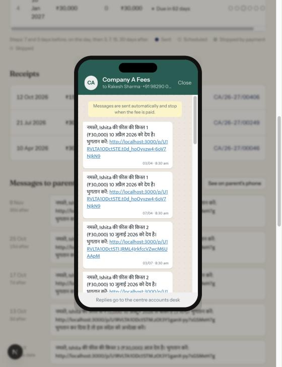
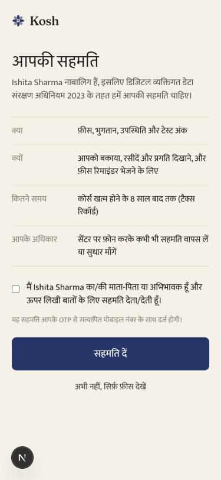
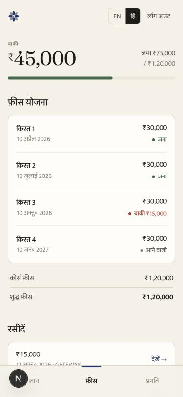
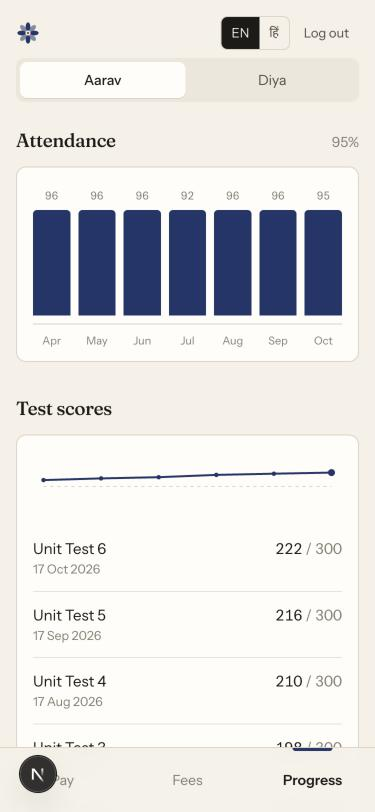
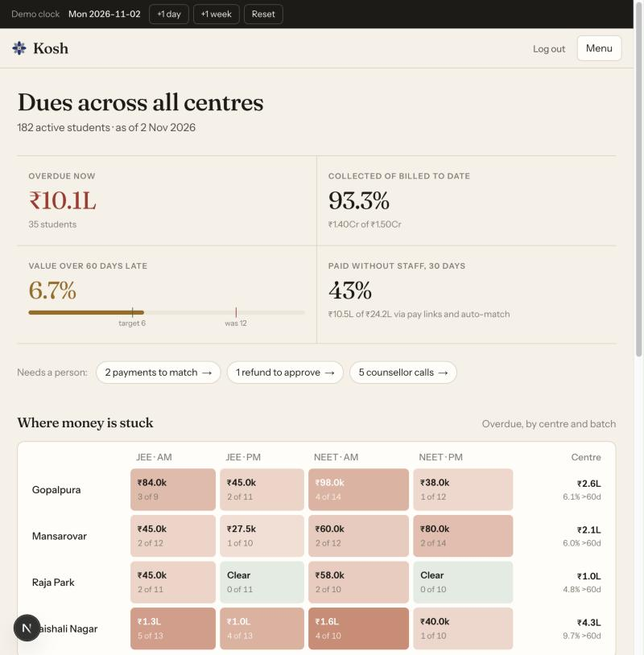
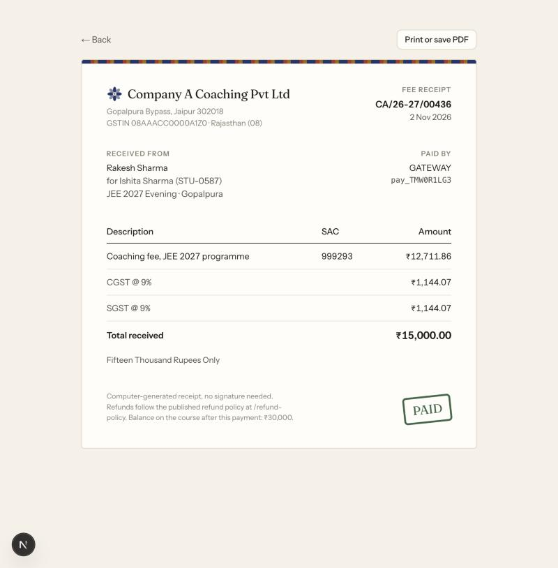
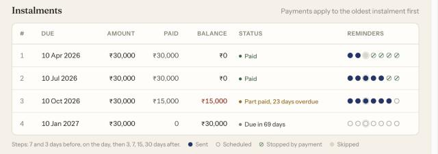
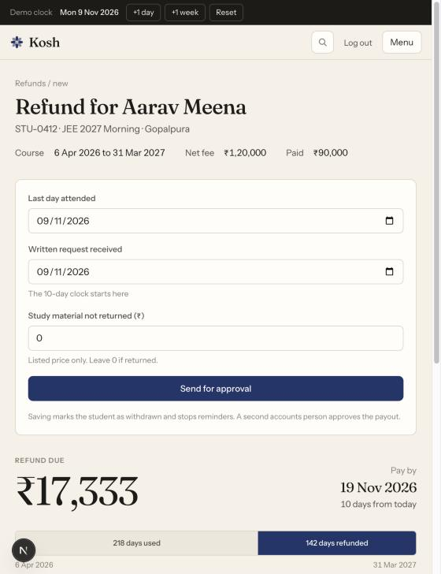
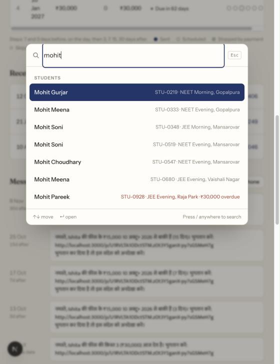
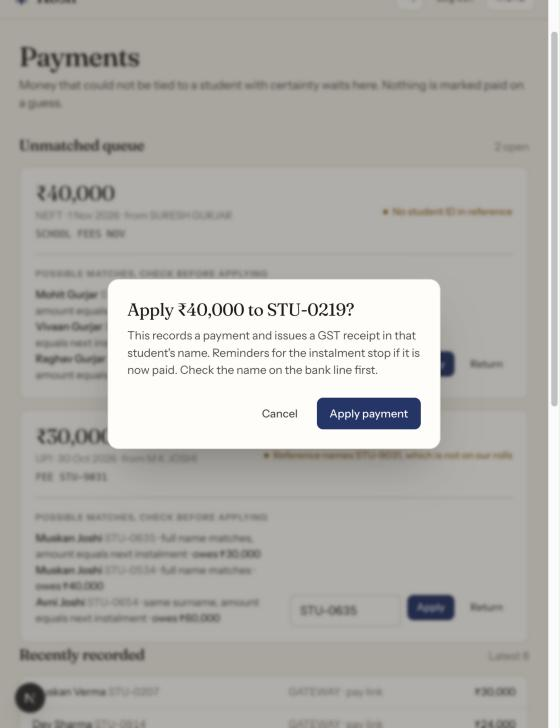
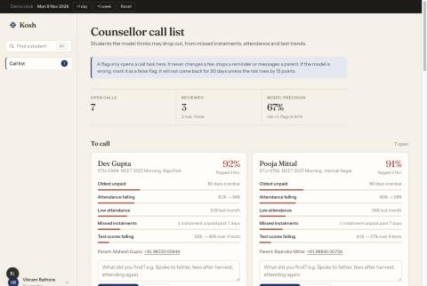
onSubmit to avoid that).<dialog> modals with focus handling and Esc, visible focus rings, reduced-motion respected, colour never the only signal (every status has a word)./parent and /staff, and every page and server action checks the role again. Parents only ever load students whose parent ID equals their session ID. Counsellors see only the call list; only counsellors can close flags; only accounts can touch money or export.npm run setup generates them locally. All personal data in the repo is fictional seed data.62 Vitest tests over the rules that cost money if wrong: the three sample rows reproduce the brief's status text exactly; FIFO allocation, overpayment credit and lateness; instalment splits always summing to the net fee; every refund clause including late joiners, leaving before start, shortfall and GST credit notes; reminder timing, no resend, no burst, stop on payment, no em dashes in templates; risk bands including "unsure" and "too little data", false-flag suppression; matching with IDs written several ways, overpayment and name-only suggestions; GST paise rounding; amount in words; CSV parsing and validation; Tally escaping and formula injection; forged and expired sessions, edited pay links, receipt keys and phone formats. Every screen was also clicked through in a browser at phone and desktop widths, including the full pay-to-receipt path.
DEMO_MODE=false) for a real launch.